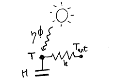
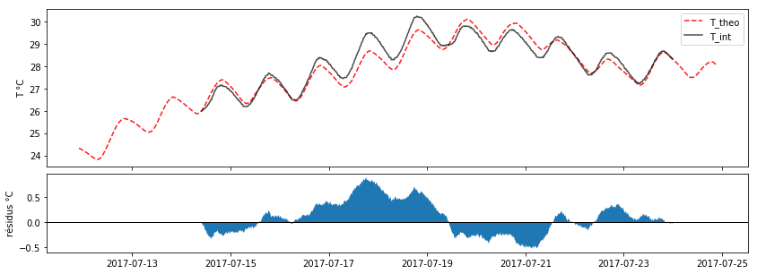

Modélisation thermique type "boite grise" de mon appartement
[voir le notebook complet sur Github]
L'idée du projet est d'évaluer les propriétés thermiques de mon appartement (masse thermique, isolation et ombrage) grâce à un modèle simple type "boite grisse". Les coefficients sont ajustés en prennant en compte la météo et la mesure de la température intérieure.
L'intêret d'un tel modèle serait d'évaluer l'impact de modifications dans l'appartement sur son comportement thermique. Par exemple, est-ce que l'ajout du rideau permet réellement de garder la fraicheur en été ?
Le modèle doit pouvoir, en prennant en compte la météo, permetre de comparer les valeurs obtenues de jours en jours, sans avoir à se soucier de savoir si tel jour était plus chaud qu'un autre, par exemple.
Le schéma électrique équivalent du modèle est :

Les coefficients ne sont pas constant mais varie suivant l'usage de l'appartement. Dans un premier temps on ne va s'intéresser que aux données obtenues pendant une semaine de vacances, c.a.d. une période pendant laquelle ces coefficients doivent être constant.
L'objectif est de voir si ce modèle simple peut décrire la thermique de l'appartement et si on obtient des valeurs cohérentes pour ces deux coefficients (h/m et eta/m).
Après optimisation sur les données, on obtient cette courbe (voir le notebook):

Avec les valeurs de paramètres :
h/M = 2.696 *1e-6 sec-1
eta/M = 3.964 *1e-6 K/J
T0 = 24.3 °C
Ces valeurs sont assez cohérentes. La masse thermique est plus faible que celle estimée (~2 cm vs 20 cm de béton)... il peut être intéressant de prendre en compte deux masses thermiques dans le modèle.
Pour la suite
- Appliquer le modèle à un autre jeu de données, c.a.d. repartir en vacances pour avoir l'appartement vide.
- Modèle avec deux masses thermiques ? ou la résistance air-mur ? ou continu dans l'épaisseur du mur ?
- Et faire les fits -en période occupée- jour par jour : voir le notebook blackbox model (work in progress).